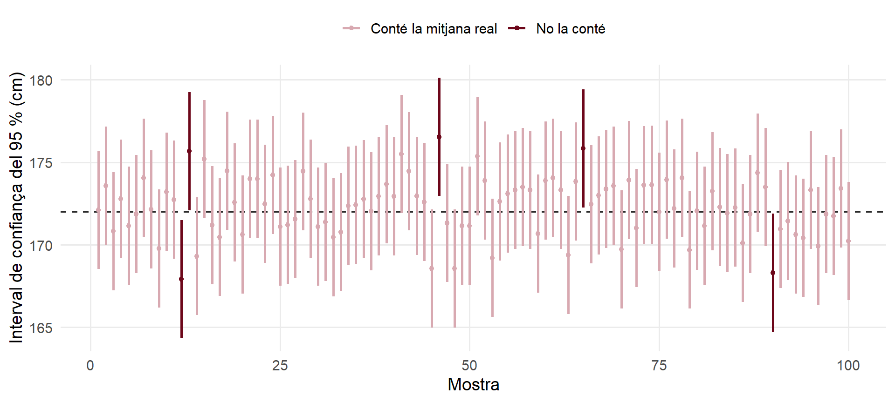
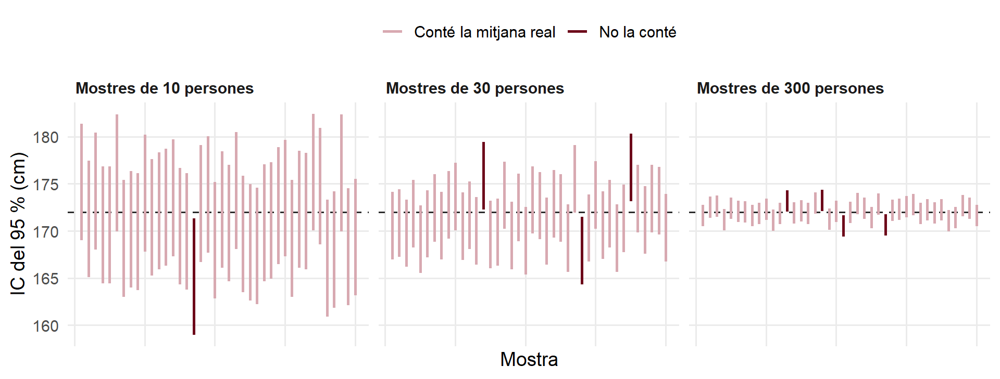

simular_intervals <- function(repeticions, n, confianca) {
z <- qnorm(1 - (1 - confianca) / 2) # 1,96 per al 95 %
tibble(mostra = 1:repeticions) |>
mutate(mitjana = replicate(repeticions, mean(rnorm(n, mean = 172, sd = 10))),
se = 10 / sqrt(n),
inf = mitjana - z * se,
sup = mitjana + z * se,
conte = inf <= 172 & sup >= 172)
}
intervals <- simular_intervals(repeticions = 1000, n = 30, confianca = 0.95)Què vol dir «95 % de confiança»?
Sessió 2 · Per aprofundir
NotaDe què va aquest document?
A les slides hem calculat que, «amb un 95 % de confiança», la nota mitjana de matemàtiques de tots els alumnes de 6è és entre 72,0 i 75,1 punts. Però què vol dir exactament aquest 95 %? És una de les idees que més s’interpreten malament en estadística. Aquí ho veurem amb una simulació.
El codi R de cada gràfic és plegat: cliqueu a Code per veure’l.
El punt de partida: una població que coneixem
Com a les explicacions anteriors, ens inventem una població de la qual sabem la resposta: l’alçada dels adults, amb una mitjana real de 172 cm i una desviació típica de 10 cm.
Ara fem com faríem a la vida real, però 1.000 vegades:
- Traiem una mostra aleatòria de 30 persones.
- Calculem l’interval de confiança del 95 %: \(\text{mitjana} \pm 1{,}96 \cdot SE\).
- Mirem si l’interval conté la mitjana real (172) o no.
Els primers 100 intervals
Cada línia vertical és l’interval d’una mostra; el punt del mig, la seva mitjana. La línia horitzontal és la mitjana real:
Codi
intervals |>
slice(1:100) |>
mutate(conte = if_else(conte, "Conté la mitjana real", "No la conté")) |>
ggplot(aes(x = mostra, ymin = inf, ymax = sup, color = conte)) +
geom_hline(yintercept = 172, linetype = "dashed", color = gris_fosc) +
geom_errorbar(width = 0, linewidth = 0.9) +
geom_point(aes(y = mitjana), size = 1.3) +
scale_color_manual(values = c("Conté la mitjana real" = bordeus_clar, "No la conté" = bordeus)) +
labs(x = "Mostra", y = "Interval de confiança del 95 % (cm)", color = NULL) +
theme(legend.position = "top")
La majoria d’intervals creuen la línia de 172, però n’hi ha uns quants (en color fosc) que no: són mostres a les quals, per atzar, els ha tocat gent especialment alta o baixa.
Quants intervals encerten?
De les 1.000 mostres, la proporció d’intervals que contenen la mitjana real és:
mean(intervals$conte)[1] 0.95Gairebé exactament el 95 %. Aquest és el significat de «95 % de confiança»:
ImportantLa interpretació correcta
Si repetíssim l’estudi moltes vegades, el 95 % dels intervals que calcularíem contindrien el valor real de la població.
El «95 %» és una propietat del mètode: és un mètode que encerta 19 de cada 20 vegades. Del nostre interval concret no sabem si és dels que encerten o dels que fallen; confiem que és dels bons.
Interpretacions incorrectes que cal evitar:
- ❌ «El 95 % dels alumnes té una nota entre 72,0 i 75,1.» L’interval parla de la mitjana, no dels alumnes individuals. (De fet, les notes individuals van de 16 a 100.)
- ❌ «Hi ha un 95 % de probabilitat que la mitjana real sigui 73,6.» La mitjana de la mostra és 73,6; la real no la sabem, i l’interval ens diu entre quins valors és plausible que estigui.
Més confiança, intervals més amples
Repetim la simulació amb tres nivells de confiança diferents:
Codi
nivells <- map_dfr(c(0.90, 0.95, 0.99), \(conf) {
simular_intervals(repeticions = 1000, n = 30, confianca = conf) |>
summarise(`Intervals que encerten` = paste0(num(mean(conte) * 100), " %"),
`Amplada mitjana (cm)` = num(mean(sup - inf))) |>
mutate(`Nivell de confiança` = paste0(conf * 100, " %"), .before = 1)
})
knitr::kable(nivells, align = "ccc")| Nivell de confiança | Intervals que encerten | Amplada mitjana (cm) |
|---|---|---|
| 90 % | 90,8 % | 6,0 |
| 95 % | 95,6 % | 7,2 |
| 99 % | 99,0 % | 9,4 |
Com més confiança volem, més intervals encerten… però a canvi són més amples, és a dir, menys precisos. No hi ha res gratis: un interval del 100 % de confiança aniria de 0 a l’infinit i no ens diria res. El 95 % és el compromís més habitual.
Mostres més grans, intervals més estrets
Ara mantenim el 95 % de confiança i canviem la mida de la mostra:
Codi
mides <- map_dfr(c(10, 30, 300), \(n) {
simular_intervals(repeticions = 40, n = n, confianca = 0.95) |>
mutate(mida = paste("Mostres de", n, "persones"))
}) |>
mutate(mida = factor(mida, levels = unique(mida)),
conte = if_else(conte, "Conté la mitjana real", "No la conté"))
ggplot(mides, aes(x = mostra, ymin = inf, ymax = sup, color = conte)) +
geom_hline(yintercept = 172, linetype = "dashed", color = gris_fosc) +
geom_errorbar(width = 0, linewidth = 0.9) +
scale_color_manual(values = c("Conté la mitjana real" = bordeus_clar, "No la conté" = bordeus)) +
facet_wrap(~ mida) +
labs(x = "Mostra", y = "IC del 95 % (cm)", color = NULL) +
theme(legend.position = "top", axis.text.x = element_blank())
En els tres casos, aproximadament el 95 % dels intervals encerten. El que canvia és l’amplada: amb mostres més grans, l’error estàndard és més petit i l’interval és més precís.
ConsellIdees clau
- Un interval de confiança del 95 % és el resultat d’un mètode que encerta el 95 % de les vegades.
- No sabem si el nostre interval concret encerta: confiem que sí.
- L’interval parla del valor de la població (la mitjana, la proporció…), no dels individus.
- Més confiança → interval més ample. Mostra més gran → interval més estret.
Anterior: Què fa per dins t.test()? · Següent: Proporcions i distribució binomial